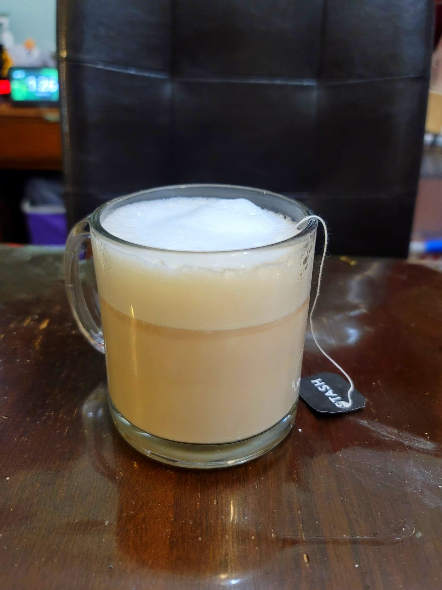

London Fog

Ingredients:
- 1 Earl grey tea bag
- 1/2 cup Boiling water
- 1/2 cup Milk, hot
- 1/4 tsp Vanilla extract
- Honey or Sugar, to taste
Instructions:
- Brew the tea in the hot water.
- Combine the milk and vanilla extract. Steam or froth the milk.
- Stir in the sweetener to the tea and then top with the milk. Serve hot or cold.